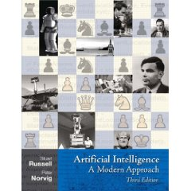

Time: |
Thursday, 6:00PM-9:00PM |
|
Location: |
401 Terry Ave, Room 106 C |
Instructor: |
Dr. Rutu Mulkar-Mehta
me@rutumulkar.com |
TA: |
Katie Porterfield
k.porterfield7@gmail.com |
Background and Description
At the end of this course, you will be able to:
- design of intelligent computer systems
- search based techniques
- Logical programming
- Decision Making under Uncertainty
- Probabilistic Reasoning
- Machine Learning
Prerequisities:
- Eagerness to rapidly learn python
- Basic Probability
- Basic Logic
- Algorithms
- Data Structures
Expectations: If you work hard, be active in class, ask questions and are enthusiastic about the material, you shoud have no problem with the pace and intensity of this class. We will be covering a lot of material in this class, and our goal is to help you learn AI concepts quickly and efficiently. Most of the focus of this class is learning by doing and learning by collaboration.
Textbook
The official textbook for this course is:
Stuart Russell and Peter Norvig. Artificial Intelligence, A Modern Approach - Third Edition

Grading:
Overall grades will be determined from:
- 3 Projects (63% of your grade) (20, 20, 23)
- In class problem sets (32% of your grade)
- Participation (5%)
Grading and solutions: We will email you your
scores once grading has been completed. Cheating and copying code from one other will not be tolerated, and will lead to an automatic zero for that assignment. If you would like to dispute your score for an assignment, you have 1 week after grading to do so. After that week, all assignment scores will be final.
Participation grade:
You can get participation grade in one of the following ways:
- Actively participate in class
- Piazza Q/A system
Syllabus and Lectures
| Date |
Topics |
Content |
Readings |
Assignment |
Slides |
| Sep 8 |
Search and Planning |
Introduction to AI, Agents and Uninformed Search
Breadth First Search, Depth First Search, Uniform Cost Search |
Ch. 2,
Ch. 3.1-3.3,
Ch. 3.4.1-3.4.4, 3.4.7 |
Python Tutorial
Search Project OUT
|
Slides |
| Sep 15 |
Informed Search and Search Optimization
Greedy best-first search, A* Search, Search and Heuristics
|
Ch. 3.5, 3.6 |
[Assign1] |
Slides
Handout
|
| Sep 22 |
Constraint Satisfaction Problems
CSP Formularion, Backtracking Search, Constraint Propagation, Forward Checking |
Ch. 6.1, 6.2, 6.3 |
[EC1]
Submit Using Gradescope
|
Slides
Handout
|
| Sep 29 |
Adversarial Search
Minmax Algorithm, Alpha-Beta Pruning |
Ch 5 |
[Assign2] |
Slides
Handout |
| Oct 6 |
Logic and Reasoning |
Logic and Logical Programing,
Proposition Logic, Inference, Horn Clauses, Forward and Backward Chaining |
Ch 7.1-7.5 |
Search Project DUE (11:59PM) |
Handout
Slides
Prolog Intro
|
| Oct 13 |
Logic and Logical Programing,
First Order Logic |
Ch 8, Ch 9.1-9.4 |
Logic Project OUT |
Slides
Handout |
| Oct 20 |
Knowledge Representation
Ontologies, Reasoning Systems |
Ch. 12 |
[Assign3] |
Slides
Handout |
| Oct 27 |
Catchup
Encoding Text into Logic (PROLOG)
|
|
[Assign4] |
Handout |
| Nov 3 |
Learning and Uncertainty |
Introduction to Probability and Naive Bayes
Uncertainity, Joint probability distributions, Bayes Rule, Independence |
Ch. 13 |
[Assign5] |
Handout |
| Nov 10 |
Markov Models |
|
Logic Project DUE
ML Project OUT
[Assign6] |
|
| Nov 17 |
Bayes Nets |
|
[Assign7] |
|
| Nov 24 |
Thanksgiving break - No Class
|
| Dec 1 |
Machine Learning II
Clustering and Similarity |
|
[Assign8] |
|
| Dec 8 |
AI Applications and Class Review
Robotics, Natural Language Processing |
Ch. 23, 25 |
|
ML Project DUE |
|
|